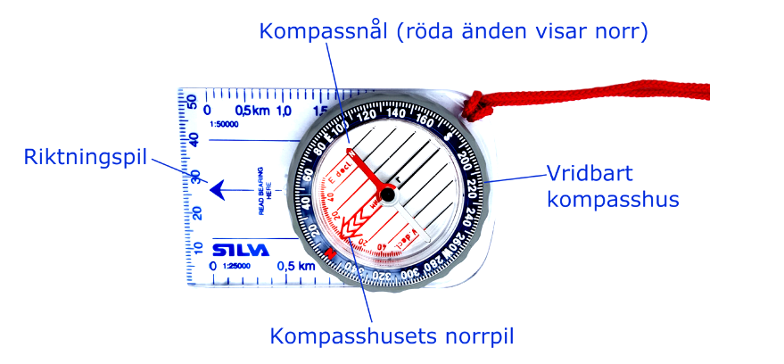

البوصلة
البوصلة تحتوي على إبرة تشير في اتجاه الشمال والجنوب، حيث أن الجزء الأحمر من الإبرة يشير دائمًا إلى الشمال. عندما تكون نقاط الإرشاد قليلة أو تبدأ بالشعور بالثقة في توجيهك، يمكنك استخدام غطاء البوصلة الدوار لأخذ اتجاه البوصلة. يمكنك بعد ذلك اتباع سهم البوصلة لتوجيه نفسك مباشرة في الاتجاه الصحيح نحو هدفك.
البوصلة هي أيضًا أداة مفيدة في البيئات ذات المناطق الواسعة المفتوحة، مثل المناطق الجبلية أو البحيرات حيث لا توجد علامات واضحة. في الجبال، قد تعتقد أنك تسير نحو قمة تراها على الخريطة، لكن القمة قد لا تكون مرئية في الواقع. كما يمكن أن تكون البوصلة مفيدة جدًا في بعض ظروف الطقس، مثل الضباب.
لتناسب الخريطة باستخدام البوصلة
أعلى الخريطة هو دائمًا اتجاه الشمال، والإبرة الحمراء في البوصلة تشير دائمًا إلى الشمال أيضًا. توضع الخريطة بعد ذلك بحيث يكون الأعلى في الخريطة موازيًا لاتجاه الإبرة الحمراء في البوصلة.
لاستخراج اتجاه البوصلة:
- ضع البوصلة بحيث يكون لديك خط مستقيم من موقعك إلى وجهتك. يجب أن يشير رأس سهم الاتجاه في البوصلة إلى وجهتك.
- قم بتدوير غطاء البوصلة بحيث ينتهي الجزء الأحمر من إبرة البوصلة في سهم غطاء البوصلة.
- الآن اتبع سهم اتجاه البوصلة وتأكد من إبقاء الإبرة داخل سهم غطاء البوصلة في جميع الأوقات.
ليس من السهل دائمًا التوجه باستخدام اتجاه البوصلة، والانحرافات الصغيرة عن الاتجاه قد تجعلك تفوت هدفك. كلما تقدمت لمسافة أطول باتجاه معين باستخدام البوصلة، زادت احتمالية أن تضل الطريق. لذلك حاول أن تعتمد قدر الإمكان على العلامات المميزة على الطريق، وتأكد من ألا تتحرك لمسافة أطول من اللازم في كل مرة.